Cyberwar has broken out amongst the nations of
the world. You are a member of your nation's Offensive Cyber Unit, and your goal is to
carry out cyberattacks on an enemy city.
Chapter 1. Tensions Rising
The modern Internet has revolutionized the way we live. A significant
number of services that we use, from social media to stores and
restaurants to the power grids and sanitation plants are all connected
to the Internet. In essence, the Internet is one big network where all
these services can be accessed from anywhere in the world. This ability
to be connected is very convenient, but large-scale attacks on these
services can be devastating.
World governments have realized that because daily life now relies on
functioning services that are connected to the Internet, the services of enemy
states can be attacked and brought down, especially during wars.

What is cyberwar?
Encyclopedia Britannica
defines cyberwar as attacks "against government
or military networks in order to disrupt, destroy, or deny their use."
There are other terms, such as cyberterrorism, cyberespionage, or
cybercrime, which may be confused with cyberwar, but because of the legal
and political implications of war, many adversarial actions in cyberspace,
like a phishing campaign against a corporation or a denial-of-service (DoS)
attack against a website, might not be considered as cyberwar.
The difficulty in distinction between cyberwar, cyberterrorism,
cyberespionage, and cybercrime is not surprising given the low
cost of entry into these fields. Anyone who is willing to learn the tools and has some creativity
could pull off a widespread cyberattack. An attack aimed at a hospital network,
for example, could accidentally spread to school or government networks.
In the end, for practical purposes, it does not matter what category a
cyberattack is classified as since bringing down the computers of a
hospital is still going to affect the hospital's operations whether the
attack was done by a military group as part of a cyberwar or by criminals
wanting to make money.
Chapter 2. Destruction
In this exercise, we will take a look at what a major war in the future
may look like. Not only will there be conflict in the land, air, and sea
(and maybe even space) domains, but there will be attacks in the
cyberdomain as well.
Attacks may not be limited to government or military networks; any service
or place that is connected to the Internet could be attacked as well.
As you are a member of your nation's Offensive Cyber Unit, your goal
is to conduct reconnaissance on enemy targets and attack them using
cyberattacks.
The Targets
Welcome to the City of Bowton, a beautiful metropolis with a
population of 700,000 people! Bowton has a diverse range of
wonderful restaurants, shops, and museums, but like other cities,
Bowton relies on electricity, water, gas, and telecommunications to
function. Across the world, Bowton is known for its highly-rated
schools and hospitals.
Below are eight targets that are critical to keep Bowton functional.
Click on the icons to prepare a cyberattack for each target, and once
an attack has been prepared for all targets, click on each of the
targets again to attack.
Banks and Government
Corporations
Oil Pipeline
Water Treatment Plant
Electric Grid
Hospitals and Schools
Telecommunications
Nuclear Power Plant
×
Prepare to attack bank and government websites
The citizens of Bowton rely on government and bank websites to
access government services and to complete financial transactions.
During this war, citizens have also received important and accurate
information about the war from government websites.
Your Goal: Deny citizens access to Bowton government and bank websites
Vector of Attack: Distributed denial of service (DDoS) - an attack
where multiple computers bombard a server with so many requests for its
website such that the server cannot process all requests. As a result,
legitimate users may not be able to access the affected website.
Preparation of attack: Create a botnet, which is a network of computers
that can be controlled remotely, by tricking people into downloading
a script that bombards the targeted websites with requests.
×
Prepare to attack Bowton businesses
Bowton is the location of the headquarters of some very large businesses
that citizens use daily. Wouldn't it be nice to discover some of their
secrets and steal sensitive customer data?
Your Goal: Install backdoors into the systems of these businesses
so that you can snoop around their servers.
Vector of Attack: Remote code execution (attack that allows bad actors to run their
code on your servers) using the Log4j zero-day vulnerability (a serious and widespread vulnerability
that allows for RCE)
Preparation of attack: The Log4j vulnerability works by typing a specific input
into a vulnerable application, which sends the input to a server. Upon receiving the
input, the server downloads and executes code from a malicious server specified in the
input.
To prepare, you write a script that enables a backdoor in the servers of these companies.
This script will be downloaded and executed when the Log4j attack is launched.
×
Prepare to attack oil pipeline
Bowton relies on pipelines to bring in oil and gas for fuel to heat buildings and for
vehicles like cars, buses, and planes. Because it is winter in Bowton now, disrupting the
flow of oil and gas will have a significant impact on the city.
Your Goal: Get into the pipeline's systems and disrupt the flow of oil and gas.
Vector of Attack: Leaked password
Preparation of attack: Sometimes it is not necessary to have to hack through a
backdoor; going through the front door works as well - that is, if you have the key. You
keep up with cybersecurity news and are aware that this oil pipeline company has recently
suffered a data breach. Maybe the passwords to its systems are lying somewhere in the
dark web... To prepare, you search the dark web in an attempt to find these passwords.
×
Prepare to attack water treatment plant
Treating wastewater is an important part of a functioning city. Without it, health and
environmental concerns could arise from water pollution. As part of the treatment process,
sodium hydroxide is added to the water. In small amounts, sodium hydroxide is fine, but
large amounts can be dangerous.
Your Goal: Get into the human machine interface (HMI) that controls the amount of
sodium hydroxide in the water and raise its levels to a dangerous amount.
Vector of Attack: Guess password to the HMI
Preparation of attack: In your research, you have scanned the network of the
water treatment plant and have found a login page to their systems that have been left
exposed to the public Internet so that employees can remotely check on the plant. To
prepare, you research possible credentials that they might use.
×
Prepare to attack electric grid
The electric grid provides the most essential aspect of a functioning society:
electricity. Without it, very few things can run. Cutting power to the city should bring
it to a standstill.
Your Goal: Break into the systems of the electric grid, switch off the substations,
and delete as many things as possible to slow their recovery.
Vector of Attack: Spear phishing emails
Preparation of attack: In spear phishing, targeted emails are sent to certain
people in order to try to trick them into providing sensitive information or opening a
malicious file. To prepare, you draft an email, which you send to electric company
employees, pretending to be their CEO. In the email, you write that
an urgent matter needs to be addressed, followed by a link to get more details on the
matter. The link leads to a fake electric company login page where employees are tricked
into entering their real credentials, which allows them to download a PDF that contains
the details of the matter. Little do the employees know that the PDF, when opened,
installs backdoors to the electric company's systems and that you have their passwords.
×
Prepare to attack hospitals and schools
Hospitals and public schools are highly vulnerable targets to cyberattacks because of
their importance but relatively lax standards in cybersecurity. Hospitals and schools are
digitalizing patient and student records, which means a compromise of these could severely
damage the operations of these institutions.
Your Goal: Prevent hospitals and schools from accessing their records by encrypting
their files and holding the decryption key for ransom.
Vector of Attack: Spear phishing emails and ransomware
Preparation of attack: A spear phishing email is an email targeted at key
individuals which tricks them into clicking a link that downloads malware. To prepare for
this attack, write some code that encrypts all the files on a system. To make your attack
more nefarious, write some additional code that spreads your ransomware to other
computers over the network so that every computer at your targets become infected.
×
Prepare to attack ISP
The Internet is an essential part of life now; our digital lives rival that of our
physical ones. Behind the scenes, Internet service providers (ISP) keep the backbones of
the Internet running. Without them, the Internet simply would not exist. If you could
comromise the core routers of the Internet, you could take out Internet service for a
large number of commercial and residential users.
Your Goal: Gain access to the core routers of the ISP in Bowton and shut them down.
Vector of Attack: Zero-day vulnerability (a previously unknown vulnerability) that
provides a backdoor into a machine
Preparation of attack: Third-party software can contain bugs that allow
unauthorized users to gain access into systems. Because it is easier to use existing
software than write new versions, companies will use existing third-party software as a part of their operations. If
a vulnerability exists in the third-party software, then all the companies that use that
software are vulnerable as well.
To prepare, do a scan of the ISP's network to determine possible software that the ISP
uses. After finding some software that they use, do an online search for vulnerabilities
in the software and read up on how to exploit the vulnerabilities.
×
Prepare to attack nuclear plant
A significant amount of Bowton's electricity is generated from the nearby nuclear plant.
The nuclear plant utilizes centrifuges as part of the process to generate electricity. If
you can gain access to the controls for the centrifuges, you could spin the centrifuges so
fast that they break themselves apart.
Your Goal: Gain access to the centrifuges and spin them as fast as possible.
Vector of Attack: Spear-phishing and Worm (a piece of malware that spreads by
replicating itself)
Preparation of attack: Like many networks, a lot of machines are connected to the
nuclear plant's network. More important machines are hidden behind more layers of
security. The centrifuges are an integral part of the plant, so its computers are
air gapped, or not connected to the Internet. The only way to transfer information
between the centrifuge computers and the outside world is through a USB stick.
To prepare for attack, write the worm that will spread through the plant's network, onto
the USB devices, and into the centrifuge. To get your worm inside the plant, you will
send a phishing email as your attack.
×
Attack bank and government websites
Now that you have your botnet of computers, it is time to get all of
them to spam Bowton's government and bank websites all at once with
traffic.
Your Goal: Deny citizens access to Bowton government and bank websites
Vector of Attack: Distributed denial of service (DDoS) - an attack
where multiple computers bombard a server with so many requests for its
website such that the server cannot process all requests. As a result,
legitimate users may not be able to access the affected website.
Attack: Tell all the computers in your botnet to DDoS the
selected websites with traffic.
×
Attack Bowton businesses
You have written code to enable a backdoor in the servers of these businesses. It is
time to exploit the Log4j vulnerability on the websites and applications of these
businesses, so that you can execute your code on their servers.
Your Goal: Install a backdoor into the systems of these businesses
so that you can snoop around their servers.
Vector of Attack: Remote code execution (allowing attackers to run their code on
your server) using the Log4j zero-day vulnerability (a serious and widespread vulnerability
that allows for RCE)
Attack: The Log4j vulnerability is widespread, but not every system is prone to
attack, either because the system does not use the Log4j software, or it uses a patched
version of the Log4j software. To attack, you try injecting your code into every text box
on the websites and applications of your target businesses.
×
Attack oil pipeline
You have found leaked passwords on the dark web from the pipeline company's data breach.
They probably have changed their passwords since the breach has occurred, but it doesn't
hurt to try to login.
Your Goal: Get into the pipeline's systems and disrupt the flow of oil and gas
Vector of Attack: Leaked password
Attack: If you can manage to login to one of the oil pipeline company's systems,
you may be able to find a way to hop to the interface that controls the flow of oil and
stop it. A more nefarious attack would be to stop the flow of oil but have the dashboards
still indicate that oil is still flowing. Other chaos you could inflict include encrypting
or deleting important files.
×
Attack water treatment plant
You have created a list of possible credentials for a system at the water treatment plant.
It is time to test out these credentials.
Your Goal: Get into the human machine interface (HMI) that controls the amount of
sodium hydroxide in the water and raise its levels to a dangerous amount.
Vector of Attack: Guess password to the HMI
Attack: Enter the potential credentials into the login page. If none of them work,
you might use some tools, like Burp Suite, to brute force the credentials.
×
Attack electric grid
You have sent your spear phishing email to all employees of the electric company to
increase the chances of someone falling for the trick. Several of the employees have
entered their real credentials into your fake login page and have infected their machines
with the malware from your PDF, which gives you an opening to access the company's internal
systems.
Your Goal: Break into the systems of the electric grid, switch off the substations,
and delete as many things as possible to slow their recovery.
Vector of Attack: Spear phishing emails
Attack: A few employees who have access to the substation interface have fallen
victim to your email, which allows you to shut down power. The credentials that you have
received from the fake login page also comes in handy in deleting files since certain
important files can be deleted only by those who have access to them.
×
Attack hospitals and schools
You have your ransomware that can encrypt computers and spread itself over networks. It is
now time to send your phishing email to the employees of Bowton schools and hospitals.
Your Goal: Prevent hospitals and schools from accessing their records by encrypting
their files and holding the decryption key for ransom.
Vector of Attack: Spear phishing emails and ransomware
Attack: Send a phishing email which tricks Bowton hospital and school employees
into clicking a link that downloads and runs your ransomware code.
×
Attack ISP
You have found some software that your ISP uses that may be vulnerable. It is time to
exploit the vulnerability to get a backdoor into their systems.
Your Goal: Gain access to the core routers of the ISP in Bowton and shut them down.
Vector of Attack: Zero-day vulnerability (a previously unknown vulnerability) that
provides a backdoor into a machine
Attack: Run your exploit to get a backdoor in the ISP's systems. You hope that the
ISP did not upgrade their software to the latest version since your exploit works with
only certain older versions. If you are successful, you might be able to jump to the core
routers and take them offline.
×
Attack nuclear plant
You have written a worm that can jump the network air gap to the centrifuge. You still
have to get your worm inside the plant's network though.
Your Goal: Gain access to the centrifuges and spin them as fast as possible.
Vector of Attack: Spear-phishing and Worm (a piece of malware that spreads by
replicating itself)
Attack: Send phishing emails to the plant's employees, which tricks them into
downloading your worm onto their computers. The worm should spread throughout the network
and eventually hop onto a USB into the centrifuge computers.
×
Success!
You have successfully spammed Bowton government and banking websites with so much traffic
that legitimate users can no longer access them. It is difficult for Bowton to stop the
attacks because they cannot tell the difference between legitimate and illegimate traffic.
The citizens of Bowton now must visit government offices and banks in person to receive
any service.
You try executing your Log4j attack on several Bowton businesses, and as expected, not
every company was susceptible, but a handful of companies with lax cybersecurity practices
were exploited. You were able to snoop around their servers and databases. In one case,
you were able to find a long list of customer names and email addresses - you could send
them some phishing emails to get their login credentials to websites they use.
This attack was based off of the
Log4j vulnerability
from 2021. This widespread vulnerability affected companies like Apple, Amazon, and
Microsoft. Fortunately, the large amounts of press over the topic persuaded companies to
patch their versions of Log4j before they could be exploited.
×
Success!
Most of the credentials that you try to access the pipeline's systems with do not work; it
looks like their IT department told everyone to change their passwords after their data
breach. You do find that there is one password that works though, which is for an account
that is no longer used that no one bothered to deactivate. It seems you do not have
permissions to shut down the pipeline, so you move on to the second step and delete all
the files that you have permission to delete.
After a few days, an employee notices that certain important files are missing and that
you, an intruder, logged in from their unused account. They do not know what else you
could have had access to, so they decide to shut down the pipeline themselves as a
precaution until they know for sure what happened. In the end, even though you did not
shut down the pipeline, in a way you actually did.
Because of the low supply of fuel, gas prices skyrocket, and Bowton residents begin panic
buying at the pump.
This attack is based off of the
Colonial Pipeline attack
in 2021 where hackers gained entry into Colonial's systems through an unused account using
a stolen password. The hackers released ransomware into the system (instead of deleting
the files), and upon discovery, Colonial staff shut down the pipeline for five days,
causing fuel shortages in the Southeast United States.
×
Success!
You were able to guess their extremely weak password to the HMI that controls the amount
of sodium hydroxide in the water supply. You increase the amount of sodium hydroxide to
the highest level possible, and your change goes unnoticed for several hours. You have
just poisoned the public water supply. Bowton officials put out a notice that tap water
should not be used.
This attack is based off of a similar
water treatment plant incident
in 2021 where weak passwords allowed a hacker to break in and increase the levels of
sodium hydroxide to a dangerous amount. Fortunately, a worker immediately noticed and
reverted the changes.
×
Success!
You were able to shut off power to about 80,000 residents for several hours. The power
company could restore power quickly because they were still able to manually turn the
switch back on physically at the substation. However, their recovery from all the deleted
files will take much longer.
This attack is based off of a
2015 Ukrainian power grid hack,
where Russia not only turned off power, but they also infected the power company's systems
with malware and DDoSed their call center.
×
Success!
Unsuspecting employees at Bowton hospitals and schools fell for your phishing email and
have installed your ransomware on their machines. The ransomware spread to other
machines on the institutions' networks as well. Teachers cannot access their online
gradebooks. Administrators cannot access student records. Doctors and nurses cannot see
patient records, nor can they see (at least in the online interface) which patients are
currently in the hospital.
This attack is based on the
2017 WannaCry ransomware,
which infected 200,000 computers around the world. Victims included businesses,
governments, hospitals, schools, and individuals.
×
Success!
It looks like the ISP is still using a vulnerable version of a piece of software, so you
were able to gain access to the ISP's network. With enough luck, you were able to jump
to the systems hosting the core routers, take them offline, and delete anything you could.
A significant number of Bowton residents use this ISP, and they are all knocked off the
Internet. You deleted important configuration files, so it takes the ISP a few days to
restore Internet.
This attack is based off of a
2011 hack of KPN,
an ISP in the Netherlands. A hacker was able to enter KPN's systems through a
vulnerability in unpatched software, and he was able to access the core routers, but
fortunately for KPN, he decided to only look around and not touch anything.
×
Success!
You sent your phishing email, and it seems like somebody at the plant fell for it because
days later, you see the headline "Bowton nuclear plant explodes" in your news feed.
This attack is based off of the
2009 Stuxnet attack
that limited the amount of enriched uranium Iran could produce by causing computers to
crash and reboot and infecting air gapped centrifuges via USB sticks.
Preparing attack...
Payment will be raised on
Time Left
Your files will be lost on
Time Left
Oops, your files have been encrypted!
What Happened to My Computer?
Your important files are encrypted.
Many of your documents, photos, videos, databases and other files are no longer
accessible because they have been encrypted. Maybe you are busy looking for a way to
recover your files, but do not waste your time. Nobody can recover your files without
our decryption service.
Can I Recover My Files?
Sure. We guarantee that you can recover all your files safely and easily. But you have
not so enough time. You can decrypt some of your files for free. Try now by clicking
Decrypt. But if you want to decrypt all your files, you need to pay. You only have 3
days to submit the payment. After that the price will be doubled. Also, if you don’t pay
in 7 days, you won’t be able to recover your files forever. We will have free events for
users who are so poor that they couldn’t pay in 6 months.
jk :) this isn't actually ransomware. Your computer is fine. This is just a friendly
reminder to not click sketchy links on the web or in your email.
Return to the cyberwar exercise.
Chapter 3. Fallout
Damage to Bowton
Taking down all eight targets, you have inflicted a huge amount of damage on Bowton.
With online services down, citizens find it difficult to obtain goods and services from
businesses and institutions.
From the point of view of businesses and institutions, they
are also finding it difficult to service customers, and even worse, because their networks
has been breached, they must deal with potential leaks of sensitive company and customer
data, like trade secrets and social security numbers.
The critical infrastructure of Bowton did not take their hits well either. Because you
released high levels of sodium hydroxide into their water, citizens have been avoiding
use of tap water and are buying more expensive bottled water for several days.
Oil and gas have become more expensive as well, given the shortage that has surfaced from the
shutdown of the pipeline. This attack has stung the city since it is below freezing in Bowton
right now.
Taking down the electric grid virtually brought the city to a standstill since
like any modern city, the people are highly dependent on electricity. This attack did not
have as worse of an impact though because power was shut down for only a few hours, and
critical infrastructure and large buildings have their own backup generators.
Finally,
amongst all the chaos, a portion of Bowton citizens could not conveniently get information
about what attacks were happening or what they should do because they did not have Internet.
Reality of Cyberwar
The goal of this exercise was to illustrate what a full-scale cyberwar may look like. Of
course, it is difficult to predict what an actual one would look like. An adversary may
attempt all of the attacks listed above, but some luck is required for success since the
attacks depend on the presence of the right holes in victim networks. In reality, all the
attacks require much more preparation than written above.
Cyberwars could be fought concurrently with a traditional war. In this case, a traditional
military would invade a country as cyberwarriors attack that country's cyber infrastructure.
The conventional army could also participate in the cyberwar as well by destroying the
infrastructure needed to keep cyber systems running, such as routers or computers.
With conventional militaries, it is possible to judge their strengths and weaknesses based
on the previous wars they have participated in and on weapons that are showcased in military
parades. A nation's cyber capabilities are harder to judge because of the secrecy that is
needed to keep such cyberweapons effective. Best practices can be followed, which will
increase the difficulty of a successful attack, but that cannot guarantee complete security.